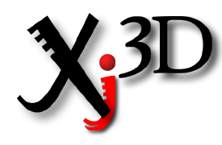

|  |
Xj3D is a project of the Web3D Consortium focused on creating a toolkit for VRML97 and X3D content written completely in Java. This toolkit may be used to the import VRML content into your custom application, or to create a fully-fledged browser. Development is financially supported through a number of institutes and companies that we would like to heartily thank for their support!
The initial impetus for this project was to create a file loader for the Java3D API and started with a grant of code from Sun Microsystems to the Web3D consortium. Over time, the project has grown in requirements and now encompasses many other features as well. For example, it is being used as one of the main testing grounds to verify the work on the new X3D specification. We have moved beyond our original Java3D-only roots and now can work with many different renderers.